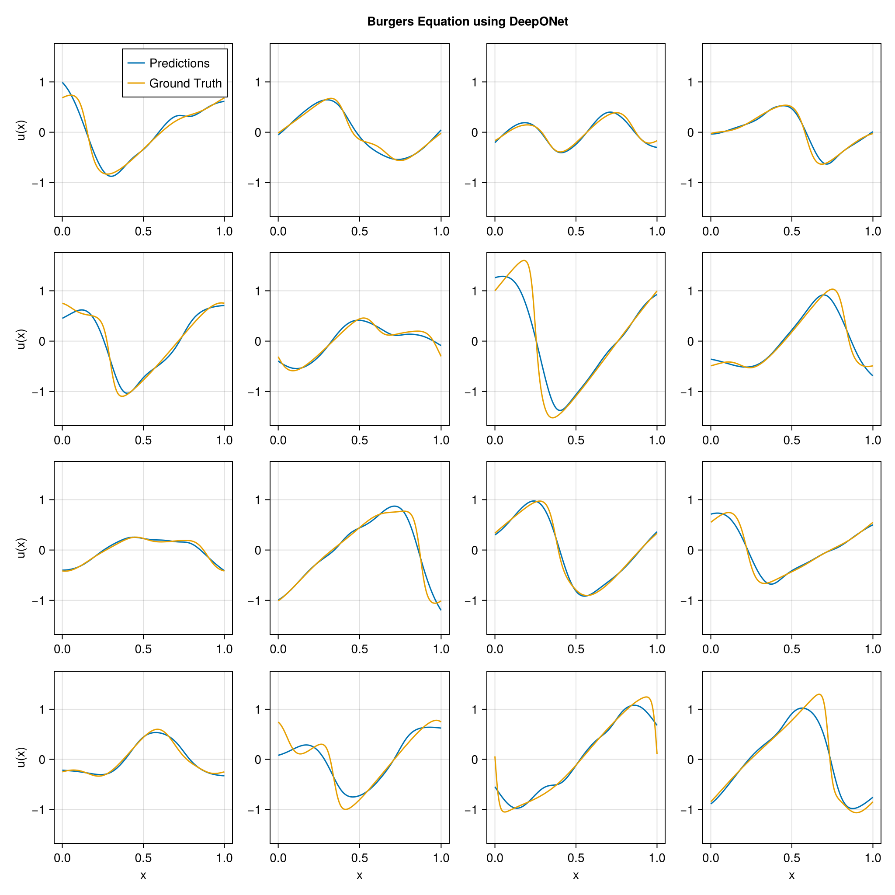

using DataDeps, MAT, MLUtils
using PythonCall, CondaPkg # For `gdown`
using Printf
const gdown = pyimport("gdown")
register(
DataDep(
"Burgers",
"""
Burgers' equation dataset from
[fourier_neural_operator](https://github.com/zongyi-li/fourier_neural_operator)
mapping between initial conditions to the solutions at the last point of time \
evolution in some function space.
u(x,0) -> u(x, time_end):
* `a`: initial conditions u(x,0)
* `u`: solutions u(x,t_end)
""",
"https://drive.google.com/uc?id=16a8od4vidbiNR3WtaBPCSZ0T3moxjhYe",
"9cbbe5070556c777b1ba3bacd49da5c36ea8ed138ba51b6ee76a24b971066ecd";
fetch_method=(url, local_dir) -> begin
pyconvert(String, gdown.download(url, joinpath(local_dir, "Burgers_R10.zip")))
end,
post_fetch_method=unpack
)
)
filepath = joinpath(datadep"Burgers", "burgers_data_R10.mat")
const N = 2048
const Δsamples = 2^3
const grid_size = div(2^13, Δsamples)
const T = Float32
file = matopen(filepath)
x_data = reshape(T.(collect(read(file, "a")[1:N, 1:Δsamples:end])), N, :, 1)
y_data = reshape(T.(collect(read(file, "u")[1:N, 1:Δsamples:end])), N, :, 1)
close(file)
x_data = permutedims(x_data, (2, 1, 3))
grid = reshape(T.(collect(range(0, 1; length=grid_size)')), :, grid_size, 1)
1×1024×1 Array{Float32, 3}:
[:, :, 1] =
0.0 0.000977517 0.00195503 … 0.997067 0.998045 0.999022 1.0
using Lux, NeuralOperators, Optimisers, Zygote, Random
using LuxCUDA
const cdev = cpu_device()
const gdev = gpu_device()
deeponet = DeepONet(;
branch=(size(x_data, 1), ntuple(Returns(32), 5)...),
trunk=(size(grid, 1), ntuple(Returns(32), 5)...),
branch_activation=tanh,
trunk_activation=tanh
)
ps, st = Lux.setup(Random.default_rng(), deeponet) |> gdev;
((branch = (layer_1 = (weight = Float32[-0.044847112 0.0781826 … 0.06640593 0.010484631; 0.011229861 -0.045575693 … 0.035298206 -0.050068848; … ; 0.07701515 -0.043428544 … -0.078744635 0.06759205; 0.060251594 -0.023067892 … 0.0071744574 0.07232516], bias = Float32[-0.025545832, 0.026674662, 0.010494038, -0.0018149093, -0.00553973, -0.0075373724, 0.008270588, -0.008973319, -0.02277039, -0.00047786534 … -0.0166387, 0.005935155, 0.022772532, 0.025250368, -0.028931059, 0.027397841, 0.015775222, -0.024645474, 0.01797966, -0.017011054]), layer_2 = (weight = Float32[0.32193333 -0.3590347 … 0.25038344 0.4442409; -0.47752765 0.44621015 … -0.08965858 0.07320288; … ; -0.22615421 -0.01474847 … -0.16674587 -0.4594423; 0.39110234 0.009247762 … -0.24382842 0.455406], bias = Float32[0.122774236, 0.071055055, 0.12267649, 0.050120886, -0.15212038, -0.06681719, -0.013004557, -0.07202726, -0.1298145, 0.12644611 … 0.0350917, 0.11091548, -0.099916816, -0.13969691, -0.025892854, 0.098927654, 0.09612784, 0.11044166, -0.11559218, 0.13999225]), layer_3 = (weight = Float32[0.4206728 -0.45080546 … 0.4974333 -0.32950476; 0.48922428 -0.41596332 … 0.17002895 -0.3747732; … ; 0.1848497 0.02044123 … 0.029756213 0.39037615; -0.48482552 0.04957347 … -0.37573525 0.37646112], bias = Float32[0.049290992, 0.013356884, -0.06387941, 0.020654801, -0.013933432, 0.029027166, 0.10537072, 0.0044964366, -0.030569298, -0.09299007 … 0.14936417, -0.07681419, 0.021941038, 0.023995107, -0.06321671, 0.041147105, -0.07007997, -0.077362835, -0.07152776, 0.11408886]), layer_4 = (weight = Float32[-0.33473694 0.16069499 … 0.49313036 0.48752958; 0.35339168 0.16569102 … 0.15369193 0.4347403; … ; -0.15865809 0.47481722 … -0.083588414 -0.39352024; 0.15193506 -0.20828606 … -0.45215955 -0.14615925], bias = Float32[0.14043115, 0.08225273, 0.105901755, -0.005552784, -0.121574864, 0.0078070294, -0.13848285, -0.17110738, -0.14118296, 0.014777086 … -0.12996872, 0.001557895, -0.075861864, -0.111976124, -0.14461872, -0.13835537, -0.12891358, 0.031953465, 0.068745136, -0.11872188]), layer_5 = (weight = Float32[-0.29081523 -0.2920647 … -0.27766964 0.16998503; -0.18167347 0.105045654 … -0.07711439 -0.053792965; … ; -0.24319163 -0.2867283 … -0.05879536 0.119338565; -0.24713975 -0.17014322 … 0.21135323 -0.18315797], bias = Float32[0.14665361, 0.0010667368, -0.097219884, -0.12834297, -0.08270259, -0.009986148, 0.040294535, 0.021696102, 0.005181618, -0.11261872 … 0.088638656, -0.043109883, -0.14106181, -0.10085235, -0.11429593, -0.1548447, 0.09517435, 0.019730773, 0.1580274, -0.12042315])), trunk = (layer_1 = (weight = Float32[-1.8561373; -0.33690742; … ; -0.23716687; 0.65244865;;], bias = Float32[-0.14219844, -0.056367993, 0.015658736, -0.16979635, -0.7052773, 0.72707784, -0.0603534, 0.87924874, -0.10914481, -0.429016 … 0.5898566, 0.40845883, 0.49717724, -0.9928615, -0.7409502, 0.30715752, -0.7802042, -0.72388124, -0.45741582, -0.15194547]), layer_2 = (weight = Float32[0.27608246 0.04893271 … -0.35110775 -0.05031333; -0.43358466 0.46074668 … -0.27296868 0.37456954; … ; 0.15495825 0.021973023 … -0.16481599 -0.2000288; -0.39901885 0.2237929 … 0.4374535 0.18233141], bias = Float32[0.027343927, -0.07320537, -0.070247605, -0.037362717, 0.11717155, -0.020777574, 0.1270282, -0.014439911, -0.13745666, -0.11125906 … -0.043215986, 0.04762986, 0.022133775, -0.13303551, 0.075859986, 0.13660622, 0.04003489, -0.033879995, -0.11527022, 0.03302159]), layer_3 = (weight = Float32[-0.3551802 0.4497478 … -0.33991438 -0.39210516; 0.3477882 0.06155747 … 0.20239061 -0.41413635; … ; -0.49308953 -0.085138574 … -0.07631318 -0.0021926912; -0.43376532 -0.2842543 … 0.42275387 0.04321391], bias = Float32[-0.02891257, 0.094108894, 0.15071692, -0.16079356, 0.049832348, 0.032343175, 0.06766889, 0.1480757, 0.094597824, 0.09685045 … -0.065042764, -0.1319144, 0.10536337, 0.10934332, 0.037249554, -0.1026555, 0.14877224, -0.030523233, 0.17288344, 0.046139587]), layer_4 = (weight = Float32[0.014669994 0.38925096 … 0.36077422 -0.39859065; -0.078813635 0.23840174 … -0.2760383 -0.43170026; … ; 0.2848889 -0.11873705 … 0.4719228 -0.10783887; -0.22846091 -0.16457106 … 0.1558879 0.37379915], bias = Float32[0.010592114, 0.13530883, 0.14272124, 0.07162484, -0.13703972, -0.06694648, -0.023672072, 0.10173737, 0.018019358, -0.08074866 … -0.07422975, 0.13819037, 0.009846431, 0.025930384, -0.014956442, -0.044691317, -0.097087264, -0.1702337, 0.17471743, 0.12573248]), layer_5 = (weight = Float32[-0.0043424703 -0.28406307 … 0.08119873 -0.10629283; -0.11507103 0.25749147 … 0.25589755 0.12866876; … ; 0.24102084 0.17784692 … -0.14804159 -0.25059438; 0.25546682 -0.21869726 … 0.24591503 -0.07024957], bias = Float32[-0.039127238, -0.080992356, -0.07978525, 0.0043750326, 0.122214526, -0.021384532, 0.07434557, 0.01323194, -0.16689174, -0.12983342 … -0.17324081, 0.15915877, -0.051111188, -0.03634913, -0.06199112, -0.044372644, -0.14116678, -0.0070889946, -0.15560617, -0.14268774])), additional = NamedTuple()), (branch = (layer_1 = NamedTuple(), layer_2 = NamedTuple(), layer_3 = NamedTuple(), layer_4 = NamedTuple(), layer_5 = NamedTuple()), trunk = (layer_1 = NamedTuple(), layer_2 = NamedTuple(), layer_3 = NamedTuple(), layer_4 = NamedTuple(), layer_5 = NamedTuple()), additional = NamedTuple()))
x_data_dev = x_data |> gdev
y_data_dev = y_data |> gdev
grid_dev = grid |> gdev
function loss_function(model, ps, st, ((v, y), u))
û, stₙ = model((v, y), ps, st)
return MAELoss()(û, u), stₙ, (;)
end
function train_model!(model, ps, st, data; epochs=5000)
train_state = Training.TrainState(model, ps, st, Adam(0.0001f0))
for epoch in 1:epochs
_, loss, _, train_state = Training.single_train_step!(
AutoZygote(), loss_function, data, train_state)
if epoch % 25 == 1 || epoch == epochs
@printf("Epoch %d: loss = %.6e\n", epoch, loss)
end
end
return train_state.parameters, train_state.states
end
ps_trained, st_trained = train_model!(
deeponet, ps, st, ((x_data_dev, grid_dev), y_data_dev))
((branch = (layer_1 = (weight = Float32[-0.04572304 0.076808386 … 0.066248685 0.010083382; 0.0119535895 -0.044585455 … 0.03549095 -0.04961192; … ; 0.06355941 -0.056773726 … -0.09225872 0.05407968; 0.05897573 -0.024363223 … 0.0058888835 0.071052514], bias = Float32[0.011480237, 0.058071118, 0.10923047, 0.0005934867, -0.11022559, 0.010125683, 0.029863268, -0.050261226, -0.033949535, -0.015504117 … 0.00017683487, -0.09378834, 0.14642178, -0.105036125, -0.073021784, 0.021676006, 0.053270448, 0.0027515977, 0.033378586, 0.033149756]), layer_2 = (weight = Float32[0.33641848 -0.33684388 … 0.25915763 0.45205384; -0.51058143 0.39114657 … -0.10340726 0.053967815; … ; -0.23686802 0.016405866 … -0.17804685 -0.4561209; 0.38349143 -0.017893296 … -0.2900421 0.34344202], bias = Float32[0.16514438, 0.14901766, 0.17164247, 0.07415616, -0.1790044, -0.07086328, -0.043770634, -0.0957365, -0.1085323, 0.2275542 … -0.03470287, 0.13395002, -0.1429635, -0.31287846, 0.122814916, 0.24429339, 0.083188176, 0.057534877, -0.18878074, 0.24738643]), layer_3 = (weight = Float32[0.34858328 -0.43631446 … 0.52744406 -0.40234226; 0.49260095 -0.48491272 … 0.13906193 -0.2911421; … ; 0.20392835 0.070954874 … 0.006438906 0.38285694; -0.4896749 0.14264159 … -0.29188478 0.50223464], bias = Float32[-0.082593225, 0.049407255, -0.087695025, 0.018770652, 0.0039469833, 0.049514823, 0.19001457, 0.026884824, -0.023870146, -0.11256713 … 0.19228177, -0.12975287, -0.12899984, 0.019991215, -0.15296012, 0.019610897, -0.09839824, -0.10118845, -0.011365603, 0.27143657]), layer_4 = (weight = Float32[-0.3185211 0.18459195 … 0.5160312 0.4701264; 0.30624425 0.14521167 … 0.14679627 0.45292577; … ; -0.17709784 0.460886 … -0.047213364 -0.36245275; 0.14494851 -0.21868075 … -0.45696926 -0.1647225], bias = Float32[0.19596142, 0.11684464, 0.030989422, 0.010010487, -0.22613072, -0.1206088, -0.12874043, -0.09522257, -0.22815733, 0.039717115 … -0.08627051, 0.04129997, -0.0701238, -0.21622331, -0.12162329, -0.0877032, -0.13198385, 0.015558856, 0.107797064, -0.13417405]), layer_5 = (weight = Float32[-0.30404595 -0.3716422 … -0.2757283 0.20905642; -0.2403514 0.11492826 … -0.07964482 -0.080891326; … ; -0.2132677 -0.28327608 … -0.043099858 0.13239841; -0.3334731 -0.19397528 … 0.19097717 -0.21886492], bias = Float32[0.17829777, 0.0057350695, -0.07731439, -0.11329603, -0.066335686, -0.10045668, 0.059447538, 0.014928139, 0.0007075459, -0.16873151 … 0.09332548, -0.029139463, -0.1490906, -0.08623343, -0.14405859, -0.16079062, 0.078772806, 0.020937303, 0.1601313, -0.067844324])), trunk = (layer_1 = (weight = Float32[-1.8432475; -0.340629; … ; -0.23646186; 0.6612199;;], bias = Float32[-0.11821913, -0.0464775, 0.039441023, -0.1524538, -0.6934517, 0.7193279, -0.046243653, 0.8775545, -0.12118864, -0.42415693 … 0.5891934, 0.39752445, 0.41061813, -0.9809888, -0.7386069, 0.31203395, -0.78306174, -0.7295952, -0.47631165, -0.16222036]), layer_2 = (weight = Float32[0.29390186 0.08529152 … -0.335487 -0.11547333; -0.42392433 0.476063 … -0.2626423 0.35511068; … ; 0.14985576 0.010095346 … -0.17673452 -0.19043027; -0.40863037 0.2095461 … 0.43093264 0.20749216], bias = Float32[0.018143913, -0.08142792, -0.07900314, -0.06551185, 0.109374166, -0.061646223, 0.113461114, -0.004950374, -0.13367528, -0.10371041 … -0.0571493, 0.047328424, 0.017954616, -0.14781387, 0.08274862, 0.1496148, 0.058909256, -0.028967863, -0.103684835, 0.036959164]), layer_3 = (weight = Float32[-0.34984192 0.45902202 … -0.31310555 -0.47312778; 0.3274829 0.03649032 … 0.20239744 -0.5637281; … ; -0.5074873 -0.087948315 … -0.0915439 0.015819525; -0.43702158 -0.2858915 … 0.41429922 0.030170515], bias = Float32[-0.023459034, 0.060855057, 0.15801527, -0.14448346, 0.05092324, 0.050957035, 0.067730986, 0.13906153, 0.07701825, 0.078514144 … -0.049308747, -0.12417306, 0.115248375, 0.11319064, 0.025076238, -0.113922775, 0.1761276, -0.043640897, 0.17187312, 0.039250407]), layer_4 = (weight = Float32[0.029679794 0.41803172 … 0.3817748 -0.4588737; -0.121078305 0.2128147 … -0.31279987 -0.41364902; … ; 0.3657682 -0.034472674 … 0.61595297 -0.084467776; -0.22087435 -0.15177508 … 0.13537034 0.37800154], bias = Float32[-0.003540557, 0.16612276, 0.16033943, 0.025404135, -0.118517846, -0.06727164, -0.015118609, 0.06756403, 0.022656295, -0.0518171 … -0.075209044, 0.1505468, 0.022850601, 0.03934389, 0.027019294, -0.043331217, -0.09279531, -0.18251576, 0.089998305, 0.12988944]), layer_5 = (weight = Float32[0.0027661917 -0.28995782 … 0.09639591 -0.13294315; -0.08694646 0.24430381 … 0.27835438 0.142313; … ; 0.19108471 0.17084196 … -0.11742838 -0.25527534; 0.27364928 -0.20513451 … 0.26002464 -0.08854079], bias = Float32[-0.034020577, -0.0593188, -0.10198731, 0.013103311, 0.11591936, -0.023530392, 0.05194943, 0.030520594, -0.14386831, -0.12161646 … -0.17472, 0.16778591, -0.031688593, -0.05209518, -0.06880544, -0.04609458, -0.121917196, 0.0016383745, -0.15961047, -0.145562])), additional = NamedTuple()), (branch = (layer_1 = NamedTuple(), layer_2 = NamedTuple(), layer_3 = NamedTuple(), layer_4 = NamedTuple(), layer_5 = NamedTuple()), trunk = (layer_1 = NamedTuple(), layer_2 = NamedTuple(), layer_3 = NamedTuple(), layer_4 = NamedTuple(), layer_5 = NamedTuple())))
using CairoMakie
pred = first(deeponet((x_data_dev, grid_dev), ps_trained, st_trained)) |> cdev
begin
fig = Figure(; size=(1024, 1024))
axs = [Axis(fig[i, j]) for i in 1:4, j in 1:4]
for i in 1:4, j in 1:4
idx = i + (j - 1) * 4
ax = axs[i, j]
l1 = lines!(ax, vec(grid), pred[idx, :, 1])
l2 = lines!(ax, vec(grid), y_data[idx, :, 1])
i == 4 && (ax.xlabel = "x")
j == 1 && (ax.ylabel = "u(x)")
if i == 1 && j == 1
axislegend(ax, [l1, l2], ["Predictions", "Ground Truth"])
end
end
linkaxes!(axs...)
fig[0, :] = Label(fig, "Burgers Equation using DeepONet"; tellwidth=false, font=:bold)
fig
end
